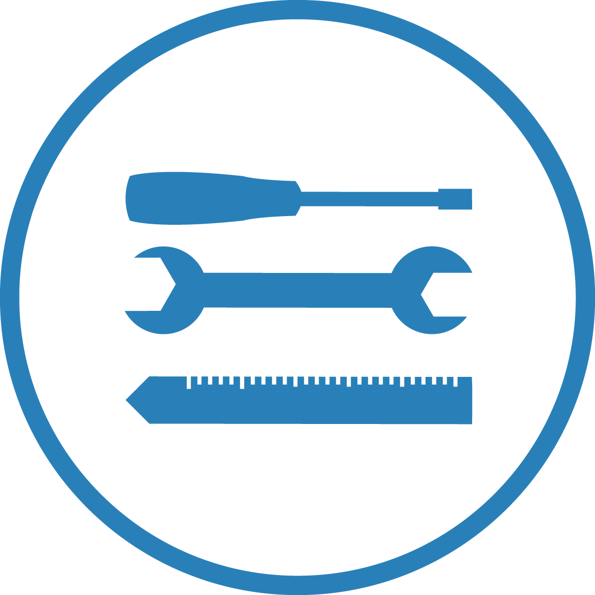

how i approach work
Ideate
I identify problems that needs resolution
Research
I conduct user and market research to fully understand the problem and its potential

Create
I then focus on product development for the researched market

Evaluate
This enables me to study the market reaction and the product. I then go back to research and makes modifications.